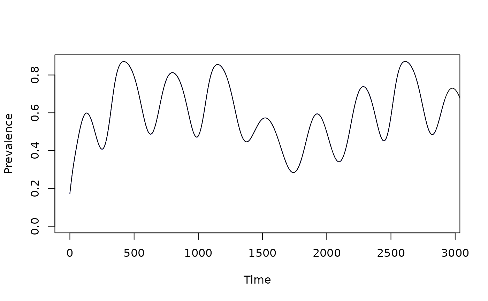

IRS
Building Indoor Residual Spraying Models
IRS.Rmd
#devtools::load_all()ramp.control handles IRS in a flexible
way. Four methods are defined; not all of them need to get used.
The irs model object
irs
$spray_mod$effects_mod$coverage_modcoverage
-
$ef_sz_mod[[1]] - for species 1
…
For the xds model object called
model:
-
VectorControl::IRSSprayHouses– a function to model mass distribution of nets and/or coverage dispatched byclass(model$irs$spray_mod)IRSEffects– modify mosquito behavioral parameters, including search weights dispatched byclass(model$irs$effects_mod)
-
VectorControl::IRSEffectSizesIRSCoverage– compute IRS coverage dispatched byclass(model$irs$coverage_mod)After evaluating
IRSCoverage, values are stored atmodel$irs$coverageIRSEffectSizes– compute IRS effect sizes dispatched byclass(model$irs$ef_sz_mod[[s]])(for the \(s^{th}\) species)
Coverage
IRS is usually done through a malaria program, so a large number of houses are sprayed in a short period of time. One measure of coverage is the fraction of houses sprayed, \(C\), but since the potency of the insecticide wanes over time, we define coverage as the product of the fraction of houses sprayed and potency, \(P(t)\). It is an operational measure that we can define without thinking much about mosquito behaviors. Coverage is thus independent of mosquito species.
To model coverage, we developed the sharkfin functions
in ramp.xds, the product of two sigmoidal
functions – one ramping up and the other down with different shapes.
With this sharkfin function, coverage increases over 20 days from zero
up to 90%, reaching 50% of the maximum on day 50. Potency wanes,
reaching 50% on day 230, 180 days after the spray round.
irs_par <- makepar_F_sharkfin(D=50, uk=1/3, L=180, mx=.9)
Fsf <- make_function(irs_par)
model <- xds_setup(MYname = "SI", Loptions = list(Lambda=40, season_par=makepar_F_sin()))
model <- xds_solve(model, 2000)
model <- last_to_inits(model)
model <- xds_solve(model, 1100)
xds_plot_EIR(model)
model <- setup_irs(model, coverage_name = "func", coverage_opts=list(trend_par = irs_par, mx=1), effect_sizes_name = "simple")
show_irs_coverage(tt, model)
model <- xds_solve(model, 1100)
xds_plot_EIR(model)Effect Sizes
The effects of IRS and effect sizes are related to realized
coverage, \(\phi\): to have an
effect, the mosquito must come into contact with the IRS, and the
behaviors of different mosquito species affect how often they will rest
on a sprayed surface. We call this contact parameter zap.
Realized coverage is the product of coverage and the contact
parameter.
Models for effect sizes translate realized coverage into
changes in the values of mosquito bionomic parameters. In a simple
model, called simple, mortality changes from baseline \(g\) assuming that there is addtional
mortality every time a mosquito blood feeds on a human and makes contact
with a sprayed surface:
\[ g \rightarrow g + f q \phi\]
The effect sizes is the ratio of the modified mortality rate over baseline:
\[ \frac{g + fq\phi}{g} = 1 + \phi \frac{fq}{g}.\] The effect size is computed relative to a baseline bionomic parameter set, and it is returned by models for independent effect sizes. The effect size is returned, rather than the modified parameters, in case multiple modes of control are operating. Later, the baseline is modified by control by taking the product of the baseline and all the independent effect sizes.
Multiple Spray Rounds
We want to be able to simulate multiple spray rounds, possibly with
different zap parameters for the different
insecticides:
round1 <- make_irs_round("actellic", 50, .95, 1)
round2 <- make_irs_round("sumishield", 415, .95)
F1 <- make_function(round1)
F2 <- make_function(round2)
tt <- seq(0, 1095, by=5)
plot(tt, 1-(1-F1(tt))*(1-F2(tt)), type = "l", main="Coverage", ylab = "A Sharkfin Function", xlab = "Time")
lines(tt, F1(tt), col = "darkred")
lines(tt, F2(tt), col = "darkblue")
test_irs = list(
t_init = c(60, 240, 420, 785)+730,
type = c("bendiocarb", "bendiocarb", "actellic", "sumishield"),
coverage = c(.9, .85, .9, .9),
zap = c(.95, .8, 0.8, .4))
m1 <- make_irs_round("actellic", 500, .9)
Fm1 <- make_function(m1)
plot(tt, Fm1(tt), type = "l")Now, we pass these to setup_irs_multiround
nullit = make_irs_multiround()
Fn <- make_function(nullit$rounds_par)
Fn(c(1:5))## [1] 0 0 0 0 0
multi4 = make_irs_multiround(options = test_irs)
F4r <- make_function(multi4$rounds_par)
Adding IRS to a Model
We are now to the point where we can add IRS.
tt0 <- 365*(0:10)
yy0 <- c(.7, 2, 1.4, 1.8, 0.6, .8, 1.1, 2, 1, .5, .5)
Lo <- list(
Lambda = 50,
season_par = makepar_F_sin(),
trend_par = makepar_F_spline(tt=tt0, yy=yy0)
)
mod <- xds_setup(Loptions=Lo, MYname = "SI")
mod <- xds_solve(mod)
mod <- last_to_inits(mod)
mod <- xds_solve(mod, 10*365, 10)
xds_plot_PR(mod)
mod_irs <- setup_irs(mod, effect_sizes_name = "simple", coverage_name = "multiround", coverage_opts = test_irs)
show_irs_coverage(tt, mod_irs)
mod_irs$irs_obj$cover_obj$coverage[2] = 0.3
mod_irs$irs_obj$cover_obj <- make_F_cover_irs(mod_irs$irs_obj$cover_obj)
show_irs_coverage(tt, mod_irs)
mod_irs <- xds_solve(mod_irs, Tmax=365*8, dt=1)
xds_plot_PR(mod_irs, clrs="darkblue")
xds_plot_PR(mod, add=T)
mod_irs1 <- add_irs_round(mod_irs, "bendiocarb", 300, .9, .9)
mod_irs1$irs_obj$cover_obj$type## [1] "bendiocarb" "bendiocarb" "actellic" "sumishield"
mod_irs1$irs_obj$cover_obj$t_init## [1] 790 970 1150 1515
mod_irs1$irs_obj$cover_obj$coverage## [1] 0.90 0.85 0.90 0.90
mod_irs1$irs_obj$cover_obj$zap## [1] 0.95 0.80 0.80 0.40
mod_irs1 <- xds_solve(mod_irs1, 10*365, 10)
xds_plot_PR(mod_irs, clrs="darkblue")
xds_plot_PR(mod, add=T)
xds_plot_PR(mod_irs1, clrs= "darkred", add=T)